Note
If you have completed this step using scripts, proceed to IEEE 802.1Qav Step 3: Pick the Scenario to Run to run a different scenario. To run this step manually as described below, make sure you have already completed:In this scenario, both CBS and LaunchTime are Enabled. With CBS and LaunchTime technologies, the transmission latency and jitter for time sensitive traffic become even smaller and very bounded even though best effort traffic is mixed with time sensitive traffic.
Note
- This section uses enp1s0 as the Ethernet controller device interface name associated with Intel® Ethernet Controller I210. The Ethernet device name may vary from board to board. Use ifconfig or ip addr to display the list of connected Ethernet devices on your board and replace appropriately.
- You can assign a name to the terminal on XFCE. Refer to Name a Terminal in XFCE. For this demo, the names of the terminal are listed above the command.
Follow these steps to run this scenario with CBS and LaunchTime both Enabled:
- [Board B] Take note of the IP address for Intel® Ethernet Controller I210.
$ ifconfig OR $ ip addr
Note
The demo uses IP address 169.254.0.2. Your IP address may differ. [Board B]
Open the first terminal named Ptp4l and start ptp4l.
[Board B] Ptp4l Terminal
$ cd ~ $ ptp4l -i enp1s0 -A -2 -m -s &Where
Argument Description -A Select the delay mechanism automatically. Start with end-to-end (E2E) and switch to peer-to-peer (P2P) when a peer delay request is received -2 Select the IEEE 802.3 network transport -m Print messages to the standard output -s Enable the slave only mode
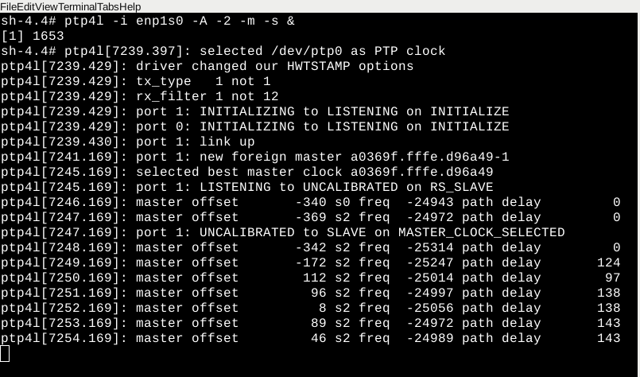[Board B]
Open the second terminal named Phc2sys and run phc2sys daemons to prepare for PTP and system clock synchronization with the clocks in Board A. You will see error messages as there is no other clock to be synchronized.
[Board B] Phc2sys Terminal 2
$ cd ~ $ phc2sys -s enp1s0 -c CLOCK_REALTIME -w -m -O 0 &Where
Argument Description -s Specify the master clock by device or interface -c Specify the slave clock by device to CLOCK_REALTIME -w Wait until ptp4l is in a synchronized state -m Print messages to the standard output -O 0 Specify the offset between the slave and master time to 0 seconds
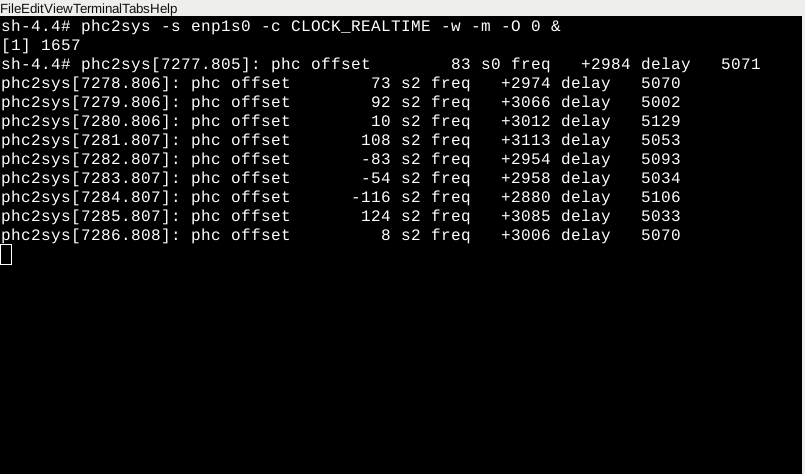[Board A]
Open a terminal and start ptp4l.
[Board A] Ptp4l Terminal$ cd ~ $ ptp4l -i enp1s0 -A -2 -m &Where
Argument Description -A Select the delay mechanism automatically. Start with end-to-end (E2E) and switch to peer-to-peer (P2P) when a peer delay request is received -2 Select the IEEE 802.3 network transport -m Print messages to the standard output
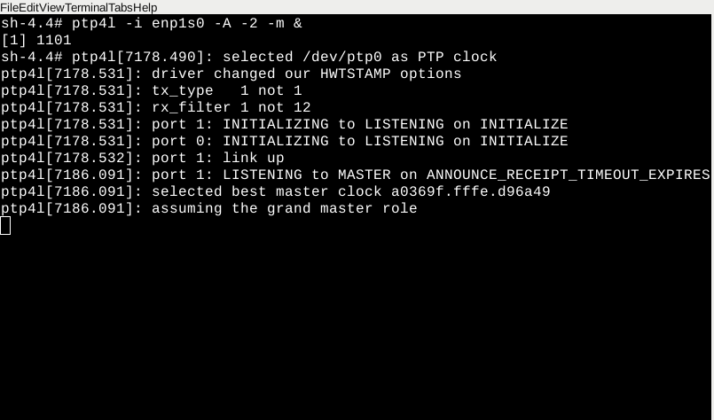[Board A]
Open the second terminal and run phc2sys daemons to set the PTP clock to be the grandmaster clock and synchronize the system clock to the grandmaster clock.
[Board A] Phc2sys Terminal
$ cd ~ $ phc2sys -s CLOCK_REALTIME -c enp1s0 -w -m -O 0 &Where
Argument Description -s CLOCK_REALTIME Specify the master clock by device or interface to CLOCK_REALTIME -c enp1s0 Specify the slave clock by device to your enp1s0 -w Wait until ptp4l is in a synchronized state -m Print messages to the standard output -O 0 Specify the offset between the slave and master times to 0 seconds
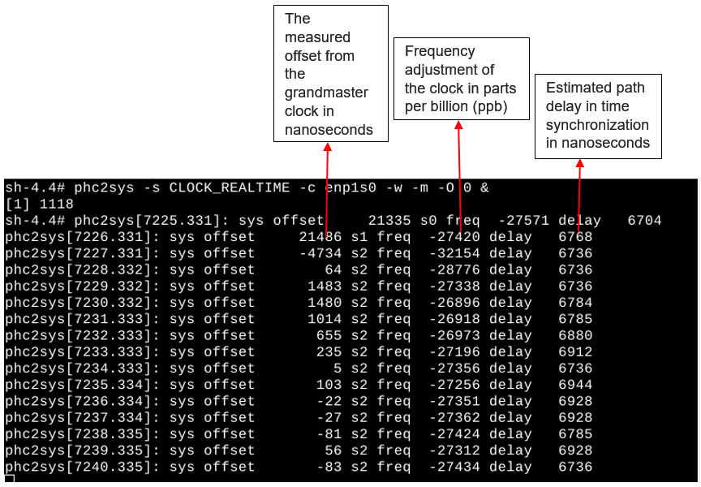[Board B] Observe that the gPTP status on Board B Ptp4l Terminal is updated now.
[Board B]
Open a new terminal and start the mrpd services for handling SRP registration over the network. Start the simple_listener application to receive time sensitive traffic only.
[Board B] Simple_Listener Terminal
$ cd ~ $ mrpd -mvs -i enp1s0 & $ simple_listener -i enp1s0 -f filename.wav
Where:
Argument Description -m Enable MMRP Registrar and Participant -v Enable MVRP Registrar and Participant -s Enable MSRP Registrar and Participant -i Specify interface to monitor Note
Replace filename.wav with a different file name (such as file-cbs-lt2.wav) for each scenario.
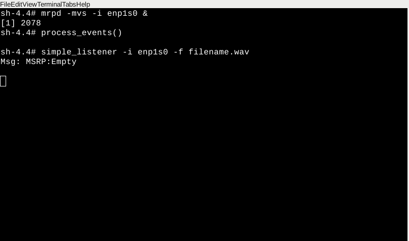[Board B]
Open a terminal named Iperf and start iperf3 in server mode to receive best effort traffic.
[Board B] Iperf Terminal
$ cd ~ $ iperf3 -s
Where
Argument Description -s Run iperf3 in server mode 
[Board A]
Open a terminal and start mrpd services for handling SRP registration over the network.
[Board A] MRPD Terminal
$ cd ~ $ mrpd -mvs -i enp1s0 &Where
Argument Description -m Enable MMRP Registrar and Participant -v Enable MVRP Registrar and Participant -s Enable MSRP Registrar and Participant -i Specify interface to monitor 
[Board A]
Open a Simple-talker-cmsg terminal and start simple-talker-cmsg to transmit time sensitive traffic with both CBS and LaunchTime technology enabled.
[Board A] Simple-talker-cmsg Terminal
$ cd /opt/intel/iotg_tsn_ref_sw/simple-talker-cmsg $ ./simple-talker-cmsg -i enp1s0 -t 2 -C 0 -q 2
WhereArgument Description -i Specify interface for AVB connection -t 2 Transport equal to 2 for 1722 packets -C 0 Posix clock selection to TAI -q 2 Set qdisc combination to enable mqprio, CBS, and ETF
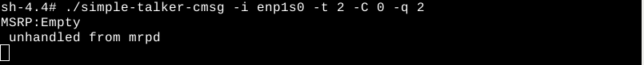[Board B]
Open a TCPDUMP terminal to capture the network packets and run it in the background.
[Board B] TCPDUMP Terminal
$ cd ~ $ tcpdump -i enp1s0 -s 50 -w filename.pcap -B 10000000000 -j adapter_unsynced --time-stamp-precision=nano &
Where:
Argument Description -s Set snapshot length of packets to 50 bytes -w Write to file <filename.pcap> -B Size in bytes (1 with 10 zeroes) -j Timestamp type set to adapter_unscynced 
[Board A] Open a terminal named Iperf, type, ~BUT DO NOT EXECUTE~, the following command to start transmitting best effort traffic (we will execute this in Step 12). Use Board B's IP address. This step uses 169.254.0.2 as Board B's IP address, as shown in Step 1.
[Board A] Iperf Terminal
$ cd ~ $ iperf3 -c 169.254.0.2 -u -b 150M -l 1448 -t 30WhereArgument Description -c 169.254.0.2 Run iperf3 in client mode, connecting to Board B iperf3 -s server on 169.254.0.2 -u Stream UDP packets -b 150M Set target bandwidth to 150M bits/sec -l 1448 Specify length of buffers to read or write -t 30 Specify time to run to 30 seconds Note
If you accidentally execute this step, press Ctrl+C to terminate.[Board A] simple-talker-cmsg Terminal
Press Ctrl+C and then press Enter on the simple-talker-cmsg terminal of Board A. The simple-talker-cmsg starts communicating with simple_listener.
Output by Board A Terminal (simple-talker-cmsg)
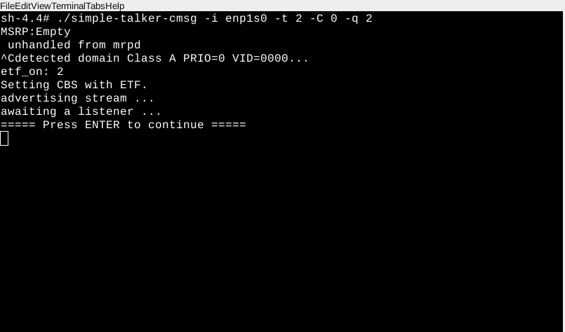Output by Board B Terminal (simple_listener)
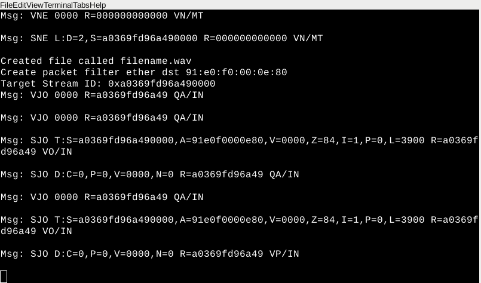- Let Iperf run for 30 seconds to capture packets. Run the next step immediately after 30 seconds.
A non-static IP address can change. Since your IP address may differ, start a new terminal (Ctrl-Shift-S) and run ifconfig on Board B again to check its IP address.
[Board B] New Terminal
$ ifconfig
In the Board A Iperf Terminal, execute the command typed in Step 9 to start transmitting best effort traffic. Use Board B's IP address. This step uses 169.254.0.2 as Board B's IP address, as shown in Step 1.
Run for up to 1 minute to capture packets.
[Board A] Iperf Terminal
$ iperf3 -c 169.254.0.2 -u -b 150M -l 1448 -t 30Where:
Argument Description -c 169.254.0.2 Run iperf3 in client mode, connecting to Board B iperf3 -s server on 169.254.0.2 -u Stream UDP packets -b 150M Set target bandwidth to 150M bits/sec -l 1448 Specify length of buffers to read or write -t 30 Specify time to run to 30 seconds Note
This step injects best effort traffic to time sensitive traffic transmission.Board A Iperf Terminal Output of step 9 execution
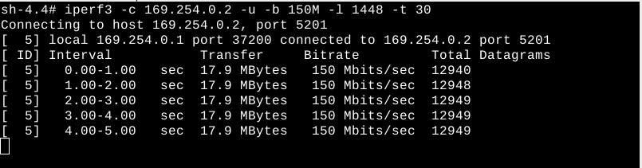Board B Iperf Terminal Output of Step 9 execution
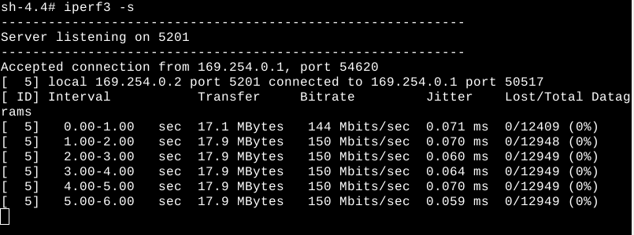- [Board A]
Press Ctrl+C on the simple-talker-cmsg terminal of Board A to stop the simple-talker-cmsg app.
[Board A] Any Terminal
$ pkill simple-talker-cmsg
- [Board B]
Ctrl+C on the simple_listener terminal of Board B to stop the simple_listener app.
[Board B] Any Terminal
$ pkill simple_listener $ pkill tcpdump $ pkill iperf
- [Board B]
Continue on the same simple_listener terminal of Board B to quit the mrpd, ptp4l, and phc2sys daemons that are running.
[Board B] Any Terminal
$ pkill mrpd $ pkill ptp4l $ pkill phc2sys
- [Board A]
Switch to the simple-talker-cmsg terminal of Board A to quit mrpd, ptp4l and phc2sys daemons that are running.
[Board A] Any Terminal
$ pkill mrpd $ pkill ptp4l $ pkill phc2sys
- [Board B]
Copy the tcpdump file <filename.pcap> to a USB flash drive so that data can be analyzed on the host machine. Refer to Mount the USB on Yocto Project* for instructions to mount the USB flash drive.
Note
Remember to reboot the system before running each scenario.
Analyze Network Traffic: IEEE 802.1Qav Demo 2 Scenario 3.3 CBS and LaunchTime Enabled
Note
To begin network traffic analysis, you first need to Configure Wireshark. Then return to this page for network traffic analysis specific to Scenario 3: Both CBS and LaunchTime are enabled.In this demo scenario, the simple-talker-cmsg application generates Stream Reserved (SR) Class A audio frames encoded in the IEEE 1722 format. The application continuously sends IEEE 1722 audio frames. The SR Class A frames are sent 125 µs apart, that is, 8000 packets/second as represented by blue line in the figure below. Best effort traffic is represented by a red line. The transmission time of each packet is passed to the kernel space by the application.
Best effort traffic is generated by iperf3 and transmitted via Board A's Ethernet controller. The following figure shows the transmission rates of two types of traffic: time-sensitive (IEEE 1722 audio frames) traffic and best effort traffic.
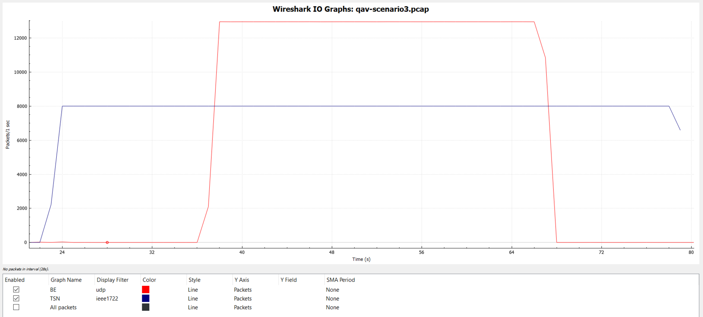
With CBS and LaunchTime technologies enabled, the SR Class A audio frames are transmitted and received with a consistent and accurate transmission rate of 8000 packets/second.
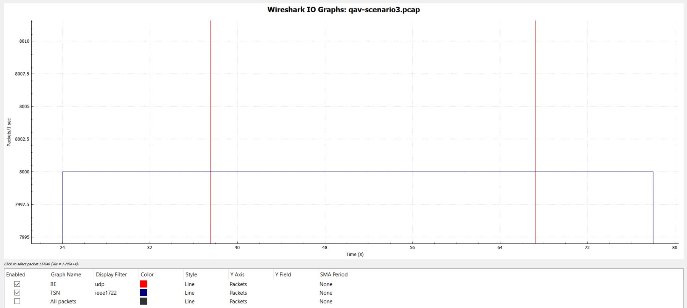
The figure below shows the IEEE 1722 audio frames by using Wireshark. The fourth column shows the inter-frame delta time. Observe that the IEEE 1722 audio frames are consistently 125 µs delta time apart. This confirms the packet/second trend plotted in the figure above.
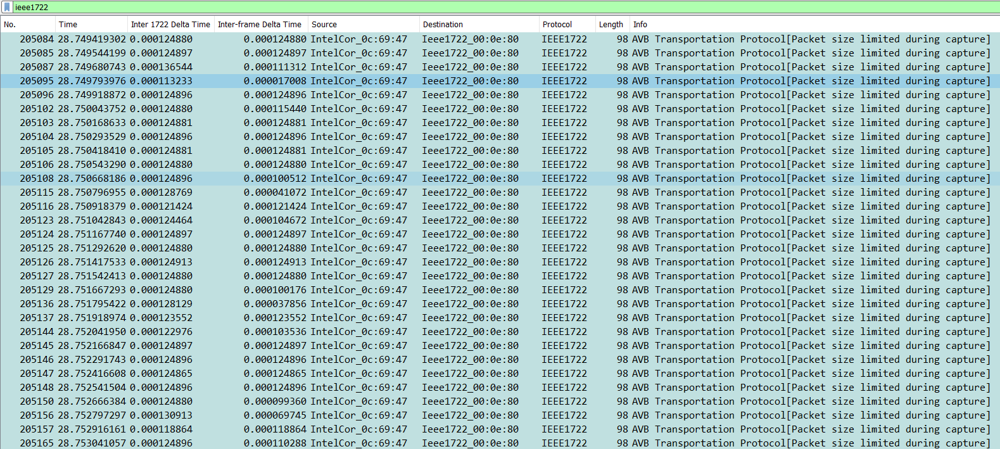
Although beyond the scope of this demo, consider multiple processes, each sending different SR Class A or Class B time-sensitive traffic through the same Ethernet controller. Consider also that the bandwidth is a mixture of time-sensitive and best effort traffic, with CBS and LaunchTime technologies enabled. In this case, the transmission latency of time-sensitive traffic is constant at the intended transmission rate unless the sum of all of SR A and B A/V streams exceed the underlying Ethernet bandwidth. The ability of time-sensitive traffic generated at a constant rate is determined by the CPU bandwidth and Linux kernel schedule policy chosen within the system.
In summary, by enabling CBS and LaunchTime technologies and by using different transmit queues to separate best effort and time-sensitive traffic, the traffic transmission of SR Class A audio stream has constant transmission latency and the transmission rate is a constant 8000 packets/second, independent of when interfering best effort traffic enters the system. Clearly, the prefetching capability and time-deterministic transmission at the Ethernet MAC level provided by LaunchTime has helped to ensure a constant transmission rate for time-sensitive traffic in this scenario. The IEEE1722 audio frames are transmitted 125 µs apart.
The CBS capability ensures time-sensitive traffic is bounded to the sawing-effect of credit-based shaping in the case of a heavily loaded transmission path. The total bandwidth used by the best effort and time-sensitive traffic exceeds the underlying Ethernet bandwidth. The network sees a few IEEE 1722 audio frames precisely 125 µs apart despite simple-talker-cmsg application sending IEEE 1722 audio in bursts.